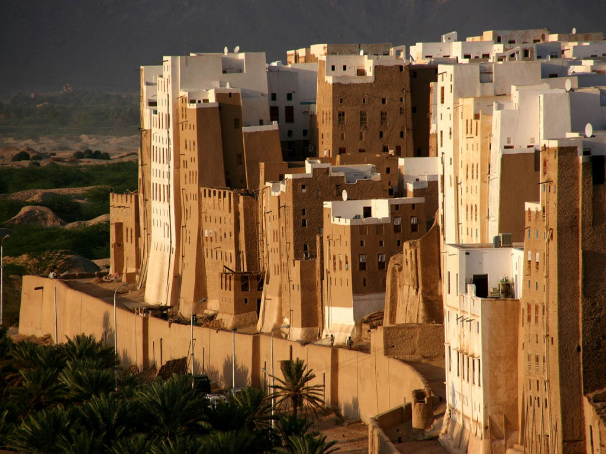
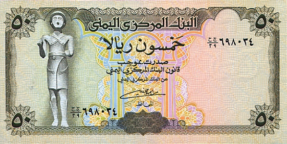

×

Yemen
Валюта
Валюта в Йемене - Йеменский риал.
Курс: 1 Йеменский риал - 0,29 рублей (7 февраля 2021).
Появился Йеменский риал в 1990 году. Находятся банкноты номиналом 50, 100, 200, 250, 500 и 1000 риалов, а также монеты — 5, 10, 20 риалов.

История
После объединения Йеменской Арабской Республики и Народно-Демократической Республики Йемен в 1990 году в обращении на всей территории страны остались как риал Северного Йемена, так и динар Южного Йемена, приравненные в соотношении 26 динаров за 1 риал, а в 1993 году были выпущены первые новые монеты. В 1996 году динар был выведен из обращения, и риал стал единственной валютой страны, причём старые денежные знаки были постепенно заменены на новые.
В настоящее время в обращении находятся монеты в 5, 10 и 20 риалов и банкноты в 50, 100, 200, 250, 500 и 1000 риалов. Банкноты Йеменского риала изготавливаются в Российской Федерации на производственных мощностях АО «Гознак».
____